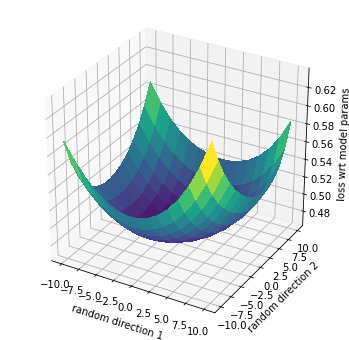

Loss Landscape#
Below we show how to use two random orthogonal directions to visualize the loss of arbitrary networks.
import tensorflow as tf
import tensorflow_datasets as tfds
import numpy as np
import itertools
import seaborn as sn
import matplotlib.pyplot as plt
from matplotlib import cm
## define the LeNet5 architecture
class LeNet5(tf.keras.Model):
''' see https://en.wikipedia.org/wiki/Convolutional_neural_network '''
def __init__(self):
super(LeNet5, self).__init__()
self.conv1 = tf.keras.layers.Conv2D(6,kernel_size=(5,5), strides=(1, 1), activation='tanh',padding='valid')
self.avpool1 = tf.keras.layers.AveragePooling2D(pool_size=(2,2), strides=(2,2), padding='valid')
self.conv2 = tf.keras.layers.Conv2D(16, kernel_size=(5,5), strides=(1, 1), activation='tanh', padding='valid')
self.avpool2 = tf.keras.layers.AveragePooling2D(pool_size=(2,2), strides=(2,2), padding='valid')
self.flatt = tf.keras.layers.Flatten()
self.dense1 = tf.keras.layers.Dense(120, activation='tanh')
self.dense2 = tf.keras.layers.Dense(84, activation='tanh')
self.dense3 = tf.keras.layers.Dense(10, activation='linear')
def call(self, inputs):
x = self.conv1(inputs)
x = self.avpool1(x)
x = self.conv2(x)
x = self.avpool2(x)
x = self.flatt(x)
x = self.dense1(x)
x = self.dense2(x)
x = self.dense3(x)
return x
## prepare training data
(x_train,y_train),(x_test,y_test)=tf.keras.datasets.fashion_mnist.load_data()
x_train = x_train/255.0
x_test = x_test/255.0
x_train,x_test = np.expand_dims(x_train,-1),np.expand_dims(x_test,-1) # when black-white
data = tf.data.Dataset.from_tensor_slices((x_train,y_train))
data = data.batch(32).prefetch(1).repeat(1)
Downloading data from https://storage.googleapis.com/tensorflow/tf-keras-datasets/train-labels-idx1-ubyte.gz
32768/29515 [=================================] - 0s 0us/step
Downloading data from https://storage.googleapis.com/tensorflow/tf-keras-datasets/train-images-idx3-ubyte.gz
26427392/26421880 [==============================] - 0s 0us/step
Downloading data from https://storage.googleapis.com/tensorflow/tf-keras-datasets/t10k-labels-idx1-ubyte.gz
8192/5148 [===============================================] - 0s 0us/step
Downloading data from https://storage.googleapis.com/tensorflow/tf-keras-datasets/t10k-images-idx3-ubyte.gz
4423680/4422102 [==============================] - 0s 0us/step
## loss and train
model = LeNet5()
optimizer = tf.keras.optimizers.Adam(0.001)
@tf.function
def logp(model,x,y):
''' model outputs logits for prediction '''
y_pred = model(x)
logp = -tf.keras.losses.sparse_categorical_crossentropy(y,y_pred,from_logits=True)
return tf.reduce_mean(logp)
@tf.function
def train_step(x,y):
loss_fn = lambda: -logp(model,x,y)
vars_fn = lambda: model.trainable_variables
optimizer.minimize(loss_fn,vars_fn)
## utils
def random_orthogonal_pair(N):
''' generate randomly two orthogonal directions '''
t = np.random.normal(size=(2,N))
t = t/np.linalg.norm(t,axis=1,keepdims=True)
a,b = t
b = b-a*a.dot(b)
b = b/np.linalg.norm(b)
return a,b
def model2flatt(model):
''' model tensors to one flatt tensor '''
return np.concatenate([t.numpy().ravel() for t in model.trainable_variables])
def flatt2model(w,shapes):
''' one flatt tensor to model tensors '''
offsets = [np.prod(s) for s in shapes]
pos_end = list(np.cumsum(offsets))
pos_start = [0]+pos_end[:-1]
return [w[i:j].reshape(s) for (i,j,s) in zip(pos_start,pos_end,shapes)]
def loss_on_weights(model,x,y,w):
''' loss depending on custom choice of weights '''
# keep the original weights
vals_original = [t.numpy() for t in model.trainable_variables]
# change weigts in the model and call it
vals = flatt2model(w,[t.shape.as_list() for t in model.trainable_variables])
for val,var in zip(vals,model.trainable_variables):
var.assign(val)
out = logp(model,x,y)
# restore the original weights
for val,var in zip(vals_original,model.trainable_variables):
var.assign(val)
return out
## train
for i,(x,y) in enumerate(data):
if i%100 == 0:
print(logp(model,x_test,y_test).numpy())
train_step(x,y)
-2.287972
-0.76297957
-0.6652043
-0.6420852
-0.5990894
-0.57714295
-0.5677686
-0.5692254
-0.5330487
-0.5364593
-0.5089766
-0.5034853
-0.5057376
-0.49841446
-0.5071701
-0.46575975
-0.4575708
-0.47933492
-0.45751402
## compute the loss on weights along two random orthogonal dimensions!
np.random.seed(12345)
N = model.count_params()
a,b=random_orthogonal_pair(N)
w0 = model2flatt(model)
def fn(a_step,b_step):
return loss_on_weights(model,x_test,y_test,w0+a_step*a+b_step*b)
fn = np.vectorize(fn)
xs,ys = 10*np.linspace(-1,1,15),10*np.linspace(-1,1,15)
grid = np.meshgrid(xs,ys,sparse=True)
X,Y,Z = *grid,fn(*grid)
fig, ax = plt.subplots(subplot_kw={"projection": "3d"},figsize=(6,6))
ax.set_xlabel('random direction 1')
ax.set_ylabel('random direction 2')
ax.set_zlabel('loss wrt model params',rotation=90,labelpad=6)
surf = ax.plot_surface(X,Y,-Z, cmap=cm.viridis, linewidth=0, antialiased=False)
plt.show()

Behavior of activations near 0#
Classical activation functions satisfy $h’’(0)=0$ or $h(x)=\Theta(x)+O(x^3)$ for small $x$. We say that they are nearly-linear around 0.
sn.set_style("darkgrid")
palette = itertools.cycle(sn.color_palette())
fs = [tf.keras.activations.linear,tf.keras.activations.tanh,tf.keras.activations.sigmoid,tf.keras.activations.relu]
#fs = [np.vectorize(f) for f in fs]
fig,axs = plt.subplots(1,4,figsize=(12,3))
xs = np.linspace(-2,2,100)
for (f,ax) in zip(fs,axs.ravel()):
ax.plot(xs,f(xs),label=f.__name__,color=next(palette))
ax.legend()
fig.tight_layout()
Hessian Approximation#
The chain rule for the hessian of neural network loss is: $$ D^2_w \ell(z) = D_w(D_z\ell \bullet D_w z) = D^2_z\ell \bullet D_w z \bullet D_w z + D_z\ell\bullet D^2_w z $$
The approximated chain fule would neglect the curvature contribution, giving $$ D^2_w \ell(z) \approx D^2_z\ell \bullet D_w z \bullet D_w z $$
Below we test it!
### utils
## utils for exact hessian form
@tf.function
def logp(logits,y):
''' logits of shape (n_batch,n_class), y of shape (n_batch,) '''
logp = tf.gather(logits,y,batch_dims=1) - tf.reduce_logsumexp(logits,-1) # (n_batch,)
return tf.reduce_mean(logp) # (,)
@tf.function
def grad(model,var,x,y):
with tf.GradientTape() as tape:
logits = model(x)
loss = -logp(logits,y)
grad = tape.gradient(loss,var)
return grad
@tf.function
def hvp(model,var,vec,x,y):
''' hessian-vector product; takes advantage of weighted gradient (hess is with respect to weight matrix) '''
# second derivative (on top)
with tf.GradientTape() as outer_tape:
# first derivative (inner)
with tf.GradientTape() as inner_tape:
logits = model(x)
loss = -logp(logits,y)
grads = inner_tape.gradient(loss,var)
hess_vec = outer_tape.gradient(grads,var,output_gradients=vec)
return hess_vec
@tf.function
def hform(model,var,vec,x,y):
''' hessian form of model loss, with respect to variable, evaluated at vector '''
h = hvp(model,var,vec,x,y)
return tf.reduce_sum(vec*h)
## utils for approx hessian form
@tf.function
def jac_logits_var(model,var,x,y=None):
''' jacobian of logits wrt model variable '''
with tf.GradientTape() as tape:
logits = model(x)
jac = tape.jacobian(logits,var)
return jac
@tf.function
def hess_loss_logits(model,x,y):
''' hessian of loss wrt logits '''
with tf.GradientTape() as outer_tape:
with tf.GradientTape() as inner_tape:
logits = model(x)
loss=-logp(logits,y) # (n_batch,n_class)
grads = inner_tape.gradient(loss,logits) # (n_batch,n_class)
return outer_tape.batch_jacobian(grads,logits) # (n_batch,n_class,n_class)
@tf.function
def hform_approx(model,var,vec,x,y):
''' hessian form wrt variable, evaluated on vector; approximate '''
H = hess_loss_logits(model,x,y) # (n_batch,n_class,n_class)
J = jac_logits_var(model,var,x) # (n_batch,n_class,var.shape)
vec = grad(model,var,x,y) # (var.shape,)
#J_dot_vec = tf.einsum('abcd,cd->ab',J,vec) # (n_batch,n_class)
axes = [range(2,2+len(vec.shape)),range(len(vec.shape))]
J_dot_vec = tf.tensordot(J,vec,axes=axes)
Hform = tf.einsum('xab,xa,xb->',H,J_dot_vec,J_dot_vec)
return Hform
## utils to refresh initialization
def reset_kernels(model):
for l in model.layers:
if hasattr(l,'kernel'):
l.kernel.assign(l.kernel_initializer(l.kernel.shape))
## define approximation error
@tf.function
def happrox_error(model,var,x,y):
vec = grad(model,var,x,y)
vec_norm = tf.linalg.norm(vec)
h_exact = hform(model,var,vec,x,y)
h_approx = hform_approx(model,var,vec,x,y)
error = tf.abs(h_approx-h_exact) / tf.square(vec_norm)
return error
def reset_kernels(model):
for l in model.layers:
if hasattr(l,'kernel'):
l.kernel.assign(l.kernel_initializer(l.kernel.shape))
import logging
logging.getLogger('tensorflow').disabled = True
import tensorflow as tf
import numpy as np
import pandas as pd
from matplotlib import pyplot as plt
import seaborn as sn
sn.set_style("darkgrid")
## load and normalize data
(x_train,y_train),_ = tf.keras.datasets.cifar10.load_data()
#x_train = x_train.reshape(-1,28*28)
x_train = x_train / 255
x_train = x_train - x_train.mean(0)
y_train = y_train.astype('int32')
x_train = x_train.astype('float32')
Downloading data from https://www.cs.toronto.edu/~kriz/cifar-10-python.tar.gz
170500096/170498071 [==============================] - 11s 0us/step
## LeNet-5
activation = tf.keras.activations.tanh
inputs = tf.keras.Input(shape=(32,32,3))
conv1 = tf.keras.layers.Conv2D(filters=6, kernel_size=(3, 3), activation=activation,name='conv1')(inputs)
avpool1 = tf.keras.layers.AveragePooling2D()(conv1)
conv2 = tf.keras.layers.Conv2D(filters=16, kernel_size=(3, 3), activation=activation,name='conv2')(avpool1)
avpool2 = tf.keras.layers.AveragePooling2D()(conv2)
flatt = tf.keras.layers.Flatten()(avpool2)
dense1 = tf.keras.layers.Dense(units=120, activation=activation,name='dense1')(flatt)
dense2 = tf.keras.layers.Dense(units=84, activation=activation,name='dense2')(dense1)
dense3 = tf.keras.layers.Dense(units=10,name='dense3')(dense2)
logits = dense3
model = tf.keras.Model(inputs=inputs,outputs=logits)
## data
(x_train,y_train),_ = tf.keras.datasets.cifar10.load_data()
x_train = x_train / 255
x_train = x_train - x_train.mean(0)
y_train = y_train.astype('int32').reshape(-1,1)
x_train = x_train.astype('float32')
x,y = x_train[:64],y_train[:64]
## estimate hessian at init
layers = ['conv1','conv2','dense1','dense2','dense3']
diffs = {layer:[] for layer in layers}
for layer in layers:
for _ in range(100):
reset_kernels(model)
var = model.get_layer(layer).kernel
#var.assign(layer.kernel_initializer(var.shape))
error = happrox_error(model,var,x,y).numpy()
diffs[layer].append(error)
fig = plt.figure(constrained_layout=False,figsize=(10,10))
gs = fig.add_gridspec(nrows=2, ncols=6)#, left=0.05, right=0.48, wspace=0.05)
ax1 = fig.add_subplot(gs[0,0:2])
ax2 = fig.add_subplot(gs[0,2:4])
ax3 = fig.add_subplot(gs[0,4:6])
ax4 = fig.add_subplot(gs[1,0:3])
ax5 = fig.add_subplot(gs[1,3:6])
axs = [ax1,ax2,ax3,ax4,ax5]
names = ['dense1','dense2','dense3','conv1','conv2']
for ax,name in zip(axs,names):
sn.distplot(diffs[name],ax=ax)
ax.legend([name])
fig.add_subplot(111, frame_on=False)
plt.tick_params(labelcolor='none', top=False, bottom=False, left=False, right=False)
plt.xlabel('relative hessian approximation error at init')
plt.title('LeNet-5 on CIFAR',fontweight="bold")
fig.tight_layout()
plt.show()
/usr/local/lib/python3.7/dist-packages/seaborn/distributions.py:2557: FutureWarning: `distplot` is a deprecated function and will be removed in a future version. Please adapt your code to use either `displot` (a figure-level function with similar flexibility) or `histplot` (an axes-level function for histograms).
warnings.warn(msg, FutureWarning)
/usr/local/lib/python3.7/dist-packages/seaborn/distributions.py:2557: FutureWarning: `distplot` is a deprecated function and will be removed in a future version. Please adapt your code to use either `displot` (a figure-level function with similar flexibility) or `histplot` (an axes-level function for histograms).
warnings.warn(msg, FutureWarning)
/usr/local/lib/python3.7/dist-packages/seaborn/distributions.py:2557: FutureWarning: `distplot` is a deprecated function and will be removed in a future version. Please adapt your code to use either `displot` (a figure-level function with similar flexibility) or `histplot` (an axes-level function for histograms).
warnings.warn(msg, FutureWarning)
/usr/local/lib/python3.7/dist-packages/seaborn/distributions.py:2557: FutureWarning: `distplot` is a deprecated function and will be removed in a future version. Please adapt your code to use either `displot` (a figure-level function with similar flexibility) or `histplot` (an axes-level function for histograms).
warnings.warn(msg, FutureWarning)
/usr/local/lib/python3.7/dist-packages/seaborn/distributions.py:2557: FutureWarning: `distplot` is a deprecated function and will be removed in a future version. Please adapt your code to use either `displot` (a figure-level function with similar flexibility) or `histplot` (an axes-level function for histograms).
warnings.warn(msg, FutureWarning)
Hessian-driven initialization#
Below we estimate hessians at init to do a custom initialization - improving upon established initializers!
import seaborn as sn
## prepare data
(x_train,y_train),_ = tf.keras.datasets.fashion_mnist.load_data()
x_train = x_train / 255
x_train = x_train - x_train.mean(0)
y_train = y_train.astype('int32')
x_train = x_train.astype('float32')
data = tf.data.Dataset.from_tensor_slices((x_train,y_train.reshape(-1,1))).batch(64).repeat(2)
hforms = []
losses = []
## build model; try different inits
setups = [(tf.keras.activations.relu,tf.keras.initializers.truncated_normal(stddev=0.3),'relu + *hessian driven stddev*'),
(tf.keras.activations.relu,tf.keras.initializers.he_normal(),'relu + He normal'),
(tf.keras.activations.tanh,tf.keras.initializers.glorot_uniform(),'tanh + Glorot'),
(tf.keras.activations.tanh,tf.keras.initializers.orthogonal(),'tanh + Orthogonal'),
(tf.keras.activations.tanh,tf.keras.initializers.orthogonal(),'relu + Orthogonal')
]
#activations = {'sigmoid':tf.keras.activations.sigmoid,'relu':tf.keras.activations.relu,'tanh':tf.keras.activations.tanh}
for setup in setups:
activation,init,name = setup
inputs = tf.keras.Input(shape=(28,28,))
flatt = tf.keras.layers.Flatten()(inputs)
if name == 'relu + *hessian driven stddev*':
init1 = 'glorot_uniform'
else:
init1 = init
init2,init3 = init,init
dense1 = tf.keras.layers.Dense(128,name='dense1',activation=activation,kernel_initializer=init1)(flatt)
dense2 = tf.keras.layers.Dense(84,name='dense2',activation=activation,kernel_initializer=init2)(dense1)
dense3 = tf.keras.layers.Dense(10,name='dense3',activation='linear',kernel_initializer=init3)(dense2)
logits = dense3
model = tf.keras.Model(inputs=inputs, outputs=logits)
## prepare optimizer
optimizer = tf.keras.optimizers.SGD(learning_rate=0.01)
vars = model.trainable_variables
layers = ['dense1','dense2','dense3']
## estimate hessian at init
for layer in layers:
for _ in range(100):
reset_kernels(model)
x,y = x_train[:100],y_train[:100]
var = model.get_layer(layer).kernel
vec = grad(model,var,x,y)
h = hform(model,var,vec,x,y)
h = h/tf.linalg.norm(vec)**2
hforms.append( (name,layer,h.numpy()) )
## train
for i,(x,y) in enumerate(data):
grads = grad(model,vars,x,y)
optimizer.apply_gradients(zip(grads,vars))
if i%100 == 0:
loss = logp(model(x_train),y_train)
losses.append( (name,i,loss.numpy()) )
import pandas as pd
hforms = pd.DataFrame(hforms)
hforms.columns = ['setup','layer','init hessian']
losses = pd.DataFrame(losses)
losses.columns = ['setup','step','loss']
sn.set_style("darkgrid")
fig,axs = plt.subplots(len(setups),2,figsize=(10,10))
for (i,setup) in enumerate(setups):
_,_,s = setup
title = s
ax = axs[i][0]
for l in layers:
mask = (hforms['setup'] == s) & (hforms['layer'] == l)
sn.kdeplot(x=hforms[mask]['init hessian'],ax=ax,log_scale=True,label=l)
ax.set_title(title,fontweight='bold')
ax.legend()
mask = losses['setup'] == s
ax = axs[i][1]
sn.lineplot(losses[mask]['step'],-losses[mask]['loss'],ax=ax)
ax.set_title(title,fontweight='bold')
fig.tight_layout()
step_max = losses['step'].max()
-losses.groupby('setup')[['loss']].max()
| loss | |
|---|---|
| setup | |
| relu + *hessian driven stddev* | 0.399231 |
| relu + He normal | 0.486452 |
| relu + Orthogonal | 0.534052 |
| tanh + Glorot | 0.507180 |
| tanh + Orthogonal | 0.533011 |
| loss | |
|---|---|
| setup | |
| relu + *hessian driven stddev* | 0.399231 |
| relu + He normal | 0.486452 |
| relu + Orthogonal | 0.534052 |
| tanh + Glorot | 0.507180 |
| tanh + Orthogonal | 0.533011 |